User Interface
The CMSIS Solution extension provides the Keil Studio GUI for project management and build tools with the CMSIS-Toolbox. Combined with other Arm and third-party extensions, it implements a powerful embedded development environment.
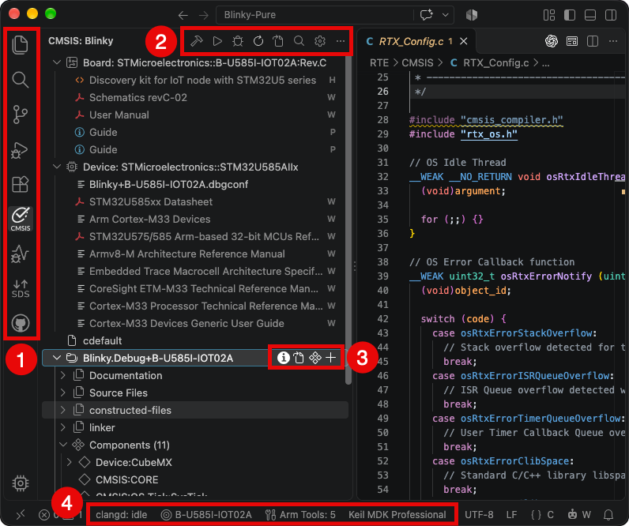
- The activity bar gives access to various views.
- Action buttons trigger specific commands.
- Some action icons may appear depending on the file and context.
- The status bar displays further information.
Activity bar
| View | Description |
|---|---|
| Explorer view lists all local files. | |
| Search view enables search/replace across all files. | |
| Source Control view allows you to work with git. | |
| Extensions view lets you work with VS Code extensions. | |
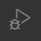 |
Run and Debug view switches the GUI to a dedicated debug view. |
| CMSIS view is the main view for working with CMSIS solution-based projects. | |
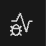 |
Trace and Live view shows trace and live data during debugging. |
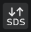 |
SDS view allows capturing, replaying, inspecting, and validating synchronous data streams from embedded systems. |
Note
The ordering of the icons may be different in your VS Code environment. Depending on the installed extensions, you may also see additional view icons.
CMSIS view
The CMSIS view shows the content of the active projects included in the solution. Each project contains configuration settings, source code files, build settings, and other project-specific information. The main area of the CMSIS view shows:
- Board and device information and related documentation.
- Groups and files: Groups and user files that you add to the project and that you can edit
- constructed-files: Contains generated files such as the
RTE_Components.hheader file for each context - linker: Contains a linker script file and a <regions>.h file (or other user-defined header files)
- Components: Shows the software components selected for the project with their source files, user code templates, and APIs. Click the files to open them in the editor. Click the book icon of a component to open the related documentation. If you are using a generator to configure your device or board, then a Run Configuration Generator option is available to start a generator session.
- Layer Type (if available): The software layers in the project with their source files, preconfigured software components, and configuration files
No solution loaded
If no CMSIS solution is active in VS Code, the view shows the following:
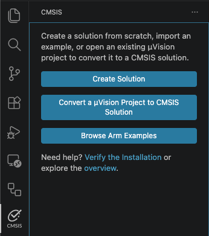
This allows you to:
- Create a solution from scratch.
- Convert a µVision project to a CMSIS solution.
- Browse Arm Examples that show the usage of Arm technology on various platforms.
The links below the buttons take you to the documentation and the overview of the VS Code extension.
Action Buttons
Once a CMSIS solution is loaded, the following action buttons are available:
| Action | Description |
|---|---|
| Build solution calls the compiler toolchain and builds the solution. | |
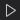 |
Load & Run application flashes the binary onto the target and starts the application. |
| Load & Debug application flashes the binary onto the target and starts a debug session. | |
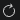 |
Refresh Build and RTE Information reloads the CMSIS-Pack information, updates the cbuild and RTE files. |
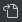 |
Open csolution.yml file opens the CMSIS solution YML file for editing. |
| Search in the current solution configuration. | |
| Open the Manage Solution view to configure project and debug settings. | |
| Show further commands. |
Search in solution sources
Select Search in Solution Sources to open the VS Code Search view with a search scope limited to files that belong to the current solution configuration. The scope includes the source files of the selected projects, source files supplied by CMSIS-Packs, and the project YML files. Files that are excluded from the current configuration are not searched.
Refresh Build and RTE Information
This button enables quick access to the command Refresh (Reload Packs and Update RTE) if the
Auto Refresh On File Change extension setting is disabled. In this case, the button shows that an update is required
by showing an additional exclamation mark:
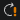
.Main area icons
Depending on the file and the context, various icons may appear:
| Action | Description |
|---|---|
| IntelliSense is active for this cproject file. | |
| Open the file. | |
| Manage the software components of the cproject file. | |
| Add groups or files to the cproject file. |
Configure IntelliSense with clangd
The CMSIS Solution extension configures the clangd language server
for the active project. Running cbuild setup generates a
compile_commands.json compilation database and compiler macro headers in the
project output directory. When Generate Clang Setup is enabled in the CMSIS
Solution settings, the extension creates or updates the project .clangd file
to use this generated build information.
For solutions containing multiple projects, click Activate Clangd
Information next to the required *.cproject.yml file. The Clangd
Information Active icon identifies the project that currently provides
IntelliSense information.
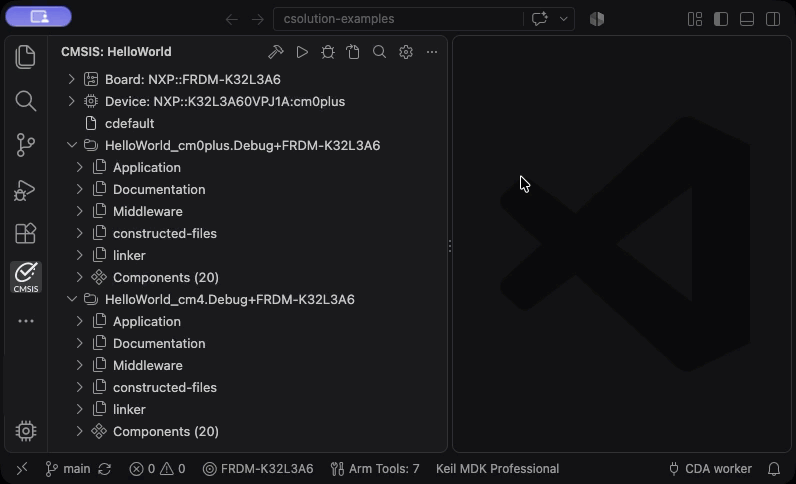
Compiler predefined macros
CMSIS-Toolbox generates separate predefined macro headers for C and C++ in the project output directory:
compile_macros_c.hfor C source and header files.compile_macros_cxx.hfor C++ source and header files.
For non-CLANG toolchains, the generated .clangd configuration includes the
appropriate header according to the source file extension. Keeping the C and
C++ macro sets separate prevents C++-only compiler macros from affecting C
files. A native CLANG toolchain does not require these compatibility headers.
With the correct project active, clangd resolves compiler-specific conditional code and provides completion, navigation, hover information, and diagnostics that match the selected build context.
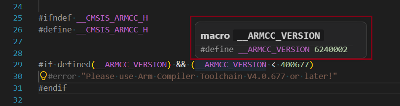
Note
The extension regenerates the project .clangd file when the solution
context changes or when the VS Code window is reloaded. This configuration
applies only to source and header files in the directory tree below the
.clangd file. Files outside this tree do not use the project configuration
and may therefore show different diagnostics. The file can contain absolute
paths to generated build information and is not intended for persistent
manual customization.
Troubleshoot IntelliSense
If editor diagnostics or completion do not match a successful build:
- Check that Generate Clang Setup is enabled in the CMSIS Solution extension settings.
- Run Refresh (reload packs, update RTE) and wait for solution conversion to complete.
- Check that
compile_commands.json,compile_macros_c.h, andcompile_macros_cxx.hexist in the active context output directory. - Click Activate Clangd Information next to the project that contains the source file.
- Open a C or C++ source or header file, then check the clangd status in the
VS Code status bar. If indexing remains stale after regenerating the build
information, run the
clangd: Restart language servercommand from the Command Palette. If the problem persists, reload the VS Code window to regenerate.clangdand restart the extensions.
Graphical previews
Files may have dedicated graphical previews:
- Files with configuration wizard annotations, such as header (
.h) and debugger configuration files (.dbgconf). - The
vckpg-configuration.jsonfile. - The
*.csolution.ymlfile. - The
*.cproject.ymlfile. - The
*.SWO.csvfile.
Configuration Wizard
Configuration Wizard annotations enable GUI-like elements in IDEs for configuration source files. This graphical approach makes it easier for users to review and edit configuration settings as required by the application.
For files containing configuration wizard annotations, open the graphical view by pressing the Open Preview button in the top right corner of the file window.
The view will be opened next to the original source file. You can switch back pressing the Show Source button .
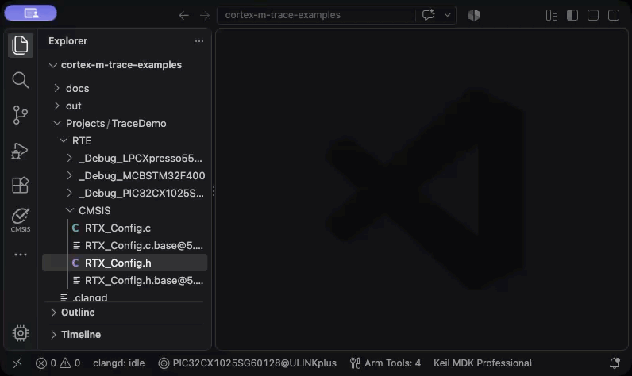
The configuration wizard view is error tolerant but notifies the user in case of malformed annotations:
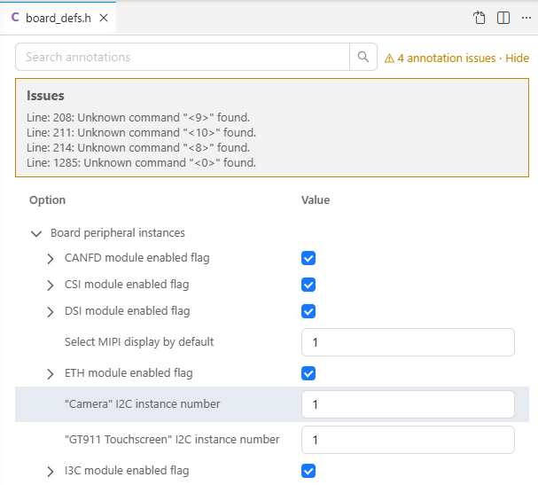
Tip
Use configuration wizard annotations for your own purposes (for example in header files). The built-in preview enables a graphical view to your files without additional effort.
Vcpkg configuration file
A vcpkg-configuration.json file specifies the development tools and versions required by a project. The Arm Tools
Environment Manager uses it to download and activate those tools, providing a consistent development environment. The
graphical preview makes it easier to detect optional tools and to select other tools versions.
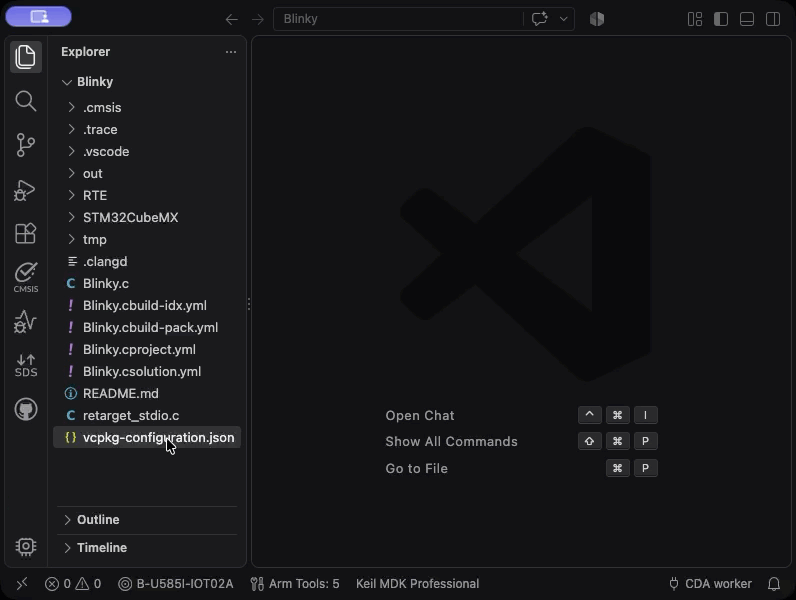
Documentation Management
The document management system in Keil Studio gives versatile options to access and store solution-related documentation. Locally stored documentation can be shared with other extensions, such as the CMSIS Developer Assistant.
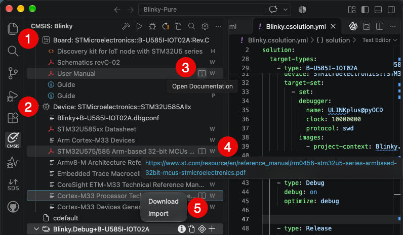
- Board-related documentation is shown.
- Device-related documentation is shown.
- A fight-click on Board/Device enables you to add documentation.
- A click on a book icon opens the document.
- Hovering over an identification letter displays the document location.
- A right-click on the document allows to download or import the document into the local document cache on the host
machine (usually
~/.cmsis/docs).
Note
Processor specific Arm architecture, core, debug and NPU manuals are automatically added to the list of device specific books.
Identification letters
| Letter | Meaning |
|---|---|
| H | HTML-based documentation |
| P | documentation contained in CMSIS-Pack |
| W | Web-based documentation (non-HTML) |
Note
Icons in front of a documentation item may show additional information, such as file type (e.g. PDF).
Status bar
The VS Code status bar displays information about the status of your development environment and the project:
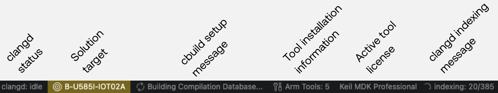
| Status bar item | Description |
|---|---|
| clangd status | Displays the status message of the clangd extension that provides IntelliSense. |
| Solution target | You can inspect errors and warnings for the active csolution project when you move the cursor over the Solution target in the status bar. The indicator is red for errors and yellow for warnings. Click the indicator to open the Output - CMSIS Solution panel and the Manage Solution view. |
| cbuild setup message | Building compilation database... displays while the compile_commands.json file is created (during cbuild setup). |
| Tool installation information | The Arm Tools Environment Manager extension downloads, installs, and manages software development tools. Move your mouse over Arm Tools to review the current list of installed tools. Click on Arm Tools to get more options. |
| Active tool license | If you are using licensed Arm tools, the active license displays. Click it to manage the active license. |
| clangd indexing message | Shows the clangd indexing progress once a C, C++, or header file is opened in the editor. |
Run and Debug view
Refer to the Debugger user interface section for more information.
Available commands
You can access commands to manage your solution and the related projects in the following ways:
- From the CMSIS view.
- With right-click to the
*.csolution.ymlfile in the Explorer view. - With the Command Palette that opens with Ctrl+Shift+P (Windows and Linux) or Cmd+Shift+P (macOS).
| Command | Description |
|---|---|
| Open Solution in Workspace... | If your workspace contains several solutions, select the active solution to work with. |
| Create Solution... | Create a new csolution project. |
| Convert a µVision project to CMSIS solution... | Convert uvprojx files to csolution project format. |
| Close Solution | Close the current active solution. |
| Search in Solution Sources | Search project sources, sources supplied by CMSIS packs, and project YML files that belong to the current solution configuration. |
| Manage Solution Settings | Configure the target set (active target, projects, images, and debug adapter) for the solution. |
| Configure Solution | Set a compiler and add software layers. |
| Manage Software Components | Review, add, or remove software components. |
| Build solution | Build the solution with the current target set. |
| Rebuild solution | Rebuild the solution with the current target set. |
| Clean all out and tmp directories | Clean all out and tmp directories for the active solution. |
| Refresh (reload packs, update RTE) | Reload information from all installed packs and run cbuild setup update-rte. |
| Load & Run application | Load the application to target and run it with active GDB server (Debugger can be attached). |
| Load & Debug application | Load the application to target and start the debugger. |
| Erase target device | Erase the target device. |
| Load application to target | Load the application to target. |
| Run application on target | Run the current application in the target with active GDB server (Debugger can be attached). |
| Target Information | Show information about debug adapter and target. |
| Focus on Solution View | Open the CMSIS view. |
Settings
The following is available via Settings (Ctrl/Cmd ,) - Extensions - CMSIS Solution.
Auto Debug Launch
Create or update launch.json and tasks.json with the debug adapter configuration of the CMSIS solution project.
When disabled, the files launch.json and tasks.json are no longer modified. (Note: also available in Manage Solution settings dialog).
Auto Refresh On File Change
Automatically refresh build information when files used by the active solution change. When disabled, these file changes mark the solution as needing refresh. Use Refresh Build Information to refresh manually. Changes committed via webviews/dialogs will still automatically trigger refresh.
Auto Show CMSIS View
Automatically shows the CMSIS view in the side bar when a CMSIS solution is loaded.
Build Output Verbosity
Control verbosity of the build and setup console messages in the Terminal view.
Available options:
| Option | Description |
|---|---|
| quiet | Show only errors or fatal conditions |
| normal | Include build steps and warnings |
| build-commands | Show command invocations during build process |
| verbose | Include command-line invocation |
| debug | Include internal process steps |
Download Packs
The CMSIS-Toolbox downloads required software packs using cpackget during setup and project build. This option enables the option --packs for cbuild.
Environment Variables
Specify additional environment variables to be set for build, run, and terminals.
Experimental Features
Enable experimental features.
Generate Clang Setup
Automatically generate for the active solution context the required setup (.clangd file and .vscode/settings.json).
For AC6 compiler include pre-defined macros in the clangd file.
Output Directory
Enter an output directory prefix for outdir and tmpdir and relocated build information files (experimental).
Probe-ID (Modified in Workspace)
Specify the unique identifier of a debug probe to connect on your host computer (typically its serial number). Leave empty to connect o the first debug probe that matches the specified type. Try using Target Information with your debug adapter connected.
Use Web Services
Use web services to obtain information about devices, boards, and examples. If enabled, information from the internet database and installed packs is used. If disabled, only information from installed packs is used.